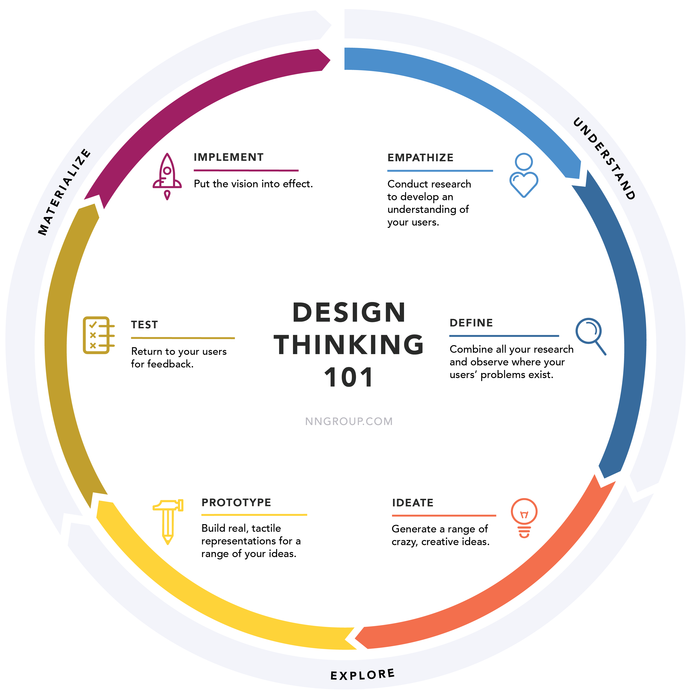

How Humans Think
Explained Simply
The Thinking Map breaks down how your mind works
from everyday decisions to hidden mental shortcuts
using clear explanations and visual logic.
Explore the Building Blocks of Thought
Behind every decision, habit, and belief are invisible mental structures that quietly shape how we interpret the world.
Mental Models
Simple frameworks the brain uses to understand complex situations and make sense of the world.
Cognitive Biases
Hidden thinking errors that influence choices, judgments, and beliefs without us noticing.
Decision Making
Why we delay, rush, or regret decisions — and how context shapes every choice.
Habits & Behavior
How repeated actions turn into automatic behavior, both helpful and harmful.

THE HIDDEN LAYER OF THOUGHT
Your Brain Is Always Deciding
Most thoughts happen below awareness.
This section explains the silent processes that guide
attention, emotions, habits, and reactions —
shaping daily life more than logic ever does.
- • Your brain prefers shortcuts to save energy
- • Emotions often decide before logic arrives
- • Repetition builds belief faster than facts
- • Attention controls memory, not intelligence
- • Awareness is the first step to better thinking
Once You See How You Think, You Can't Unsee It
Understanding your thinking patterns changes how you react, decide, and grow.
This is not about fixing your mind — it's about seeing it clearly.
Knowledge doesn't change behavior. Awareness does.